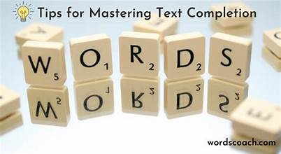

|
These are 3 expert tips to crack the IELTS academic reading sentence completion test perfectly. Our primary goal with these IELTS academic reading sentence completion tips & strategies is to give you more confidence to solve the task with ease.
- Read the given instructions carefully before answering the questions. Skipping instructions is not advisable.
- In the sentence completion question, you need to fill in the blanks with the correct answers to complete the sentence.
- Read the question sentence twice, take the keyword, compare it with the passage to get the matched word/number.

|
|